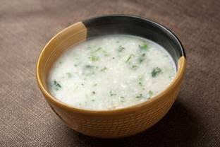
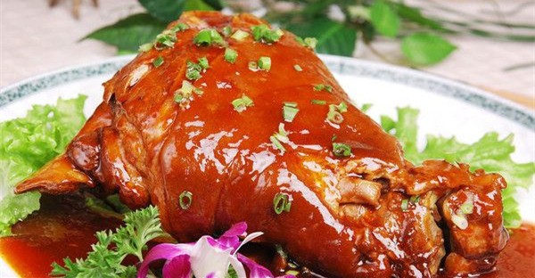
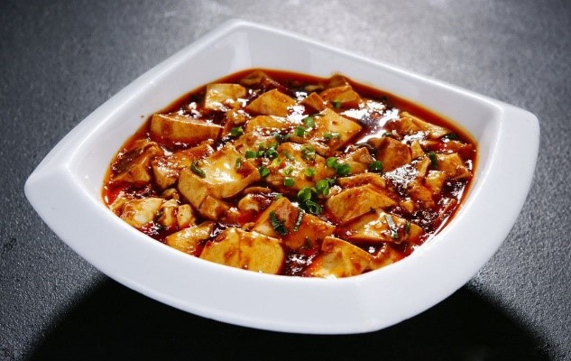

| 菜品图片 | 菜品名字 | 菜品价格 | 菜品简介 | 制作时间 | 加入购物车 |
|---|---|---|---|---|---|
|  | 东坡羹 | 30元 | 东坡羹是一道色香味俱全的传统名点。是指苏轼 所烹调的一种菜羹。 宋 苏轼《东坡羹颂》引:东坡羹，盖 东坡居士 所煮菜羹也。不用鱼肉五味，有自然之甘。其法以菘若蔓菁若芦菔若荠，皆揉洗数过，去辛苦汁，以生油少许涂釜缘及瓷盌在菜汤中，入生米为糁。 | 5分钟 | |
|  | 东坡肘子 | 30元 | 东坡肘子有肥而不腻、粑而不烂的特点，色、香、味、形俱佳 ，东坡肘子汤汁乳白，雪豆粉白，猪肘肥软适口，原汁原味，香气四溢。 | 5分钟 | |
|  | 麻婆豆腐 | 30元 | 麻婆豆腐始创于清朝同治元年(1862年)，在成都万福桥边，有一家原名'陈兴盛饭铺'的店面。店主陈春富(陈森富)早殁，小饭店便由老板娘经营，女老板面上微麻，人称'陈麻婆'。麻婆豆腐的特色在于麻、辣、烫、香、酥、嫩、鲜、活八字，也称之为八字箴言。 | 5分钟 | |
 |
盐焗鸡肉 | 30元 | 菜品简介 | 5分钟 |